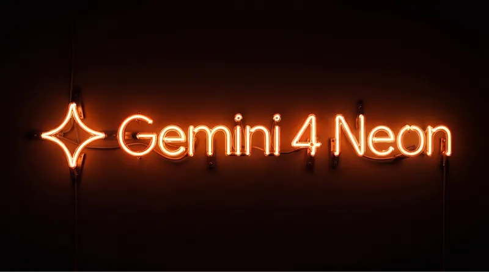

国际重点热门谷歌发布 Gemini 4 Neon：面向复杂软件工程、知识工作与科学流程
Introducing Gemini 4 Neon
谷歌发布 Gemini 4 Neon，定位为兼具前沿智能与更快端到端任务完成的模型，面向复杂软件工程、知识工作与科学流程。官方称其在 Artificial Analysis Intelligence Index 上 xhigh 思考档得分 61、总排名第 3，API 定价为每百万 Token 输入 3 美元、输出 15 美元，上下文窗口 100 万 Token，即日起在 Gemini API、Google AI Studio、Gemini for business 以及 Pro 和 Ultra 订阅的 Gemini 应用与 Antigravity 中逐步上线
谷歌官方博客 · 11-19 05:00
看原文